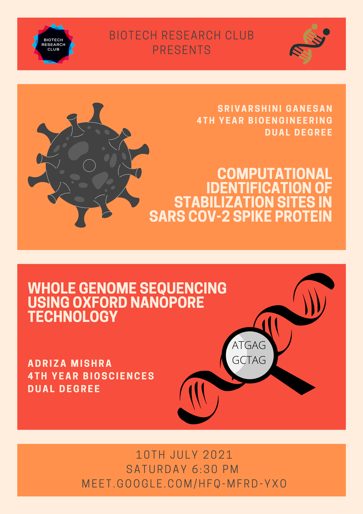

Intern Talks by Srivarshini and Adriza
Whole Genome Sequencing using Oxford Nanopore Technology
Speaker
Adriza Mishra,a 4th year Biosciences student
Abstract
Whole Genome Sequencing is a laboratory technique that can help us determine the entire genome sequence of an organism in one go by uncovering the order of DNA bases using automatic and computational techniques and large amounts of biological data. Oxford Nanopore Technology is a 3rd generation approach used for genome sequencing of polynucleotides like DNA, RNA and the works. Its seamless processing is able to sequence/read a single molecule of the polynucleotide, without the need for PCR amplification or chemical labelling of the sample. Nanopype, an open-source pipeline, was used to analyse raw signal data acquired from ONT devices, of human chromosome 12. Following the protocols of WGS, the data from Nanopype was visualised using an open-source visualisation tool known as Integrative Genomics Viewer, to showcase mutations, insertions and deletions in the genome when compared against a standard reference human genome
Computational identification of stabilization sites in SARS CoV-2 spike protein
Speaker
Srivarshini Ganesan ,a 4th year Bioengineering student
Abstract
With the increasing usage of proteins as therapeutics, the demand for better stabilization protocols is increasing. Stabilization is also important in protein-based vaccines to eliminate unnecessary interactions within the host. Two common ways of protein stabilization are the introduction of disulfides and the modification of buried polar atoms with unsatisfied hydrogen bonds. In this work, we first developed an algorithm that identifies optimal sites for the introduction of disulfides. We applied this algorithm to the receptor-binding domain of SARS CoV-2 spike protein (PDB-6M0J chain E) and identified 6 optimal sites. Next, we developed an algorithm that identified a buried polar atom in 6M0J chain E. Our algorithms are broadly applicable to any protein and are available publicly through the MODIP server. Our results have applications in the development of an improved and stable COVID-19 vaccine.
Date and time
Recording Link
Click here to watch the recording of Adriza's talk

Click here to watch the recording of Srivarshini's talk